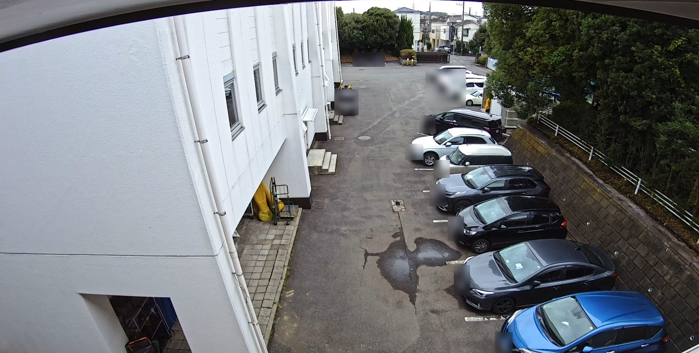

株式会社横浜フリエスポーツクラブ様（横浜FC）の練習施設のクラブハウスに、ハイブリッドクラウド型のAI防犯カメラ「Verkada」を導入しました。現地の下見から設置場所と画角を決め、工事・設定までを当社が一貫して担当しています。
導入の背景
横浜FCの練習施設は横浜市保土ケ谷区にあり、2010年から使われています。そのクラブハウスには選手・スタッフ・関係者など多くの人が出入りします。
そこで出入りや共用部の様子を記録し、何かあったときにすぐ確かめられるよう防犯カメラの導入を決められました。
下見から配置を決めるまで
最初に行ったのは現地の下見です。2025年10月にクラブハウスを回り、入口・体育館の入口と駐車場・用具や建物の内部へ続く通路・食堂とスタッフ詰所の5か所を確かめました。
翌日には5台の配置案をお出ししました。とはいえ、カメラは多ければよいというものではありません。映したい範囲と台数の兼ね合いを詰めた結果、玄関の2台で入口と駐車場をまとめて押さえ、食堂側には広い範囲を1台で見渡せる魚眼カメラを置く4台の構成に落ち着きました。
導入した内容
| 設置した場所 | カメラ | 主に映すところ |
|---|---|---|
| 玄関の天井 | 屋外用バレットカメラ（4K）2台 | クラブハウスの入口と駐車場 |
| 建物の裏手（ロッカールーム側） | 屋外用ドームカメラ 1台 | 用具や建物の内部へ続く通路 |
| 食堂側 | 屋外用魚眼カメラ 1台 | 食堂側の屋外を180度で見渡す |
映像はVerkada Commandでクラウドからまとめて管理しています。導入の時期は2026年1月です。


録画機を置かずに配線をまとめる
工事で特に気を配ったのは配線です。各カメラまでは配管を通してケーブルを守り、LANケーブル1本で電源と通信をまかなうPoEという方式でつなぎました。こうしておけばカメラのそばに電源を用意する必要がありません。
給電の機器は事務所の天井裏と建物の裏手の箱の中にまとめています。しかもVerkadaは録画機を置かずに済むので、機器の置き場所や管理の手間も増えません。
Verkadaを選んでいただいた理由
Verkadaはカメラ本体にエッジストレージを備えたハイブリッドクラウド型のカメラです。映像はカメラの中に残しつつ、クラウドからまとめて管理できます。そのため録画機が要らず、権限のある担当者なら離れた場所からでもパソコンやスマートフォンで映像を確かめられます。
今回の3機種はいずれも屋外用で、防水・防じんと耐衝撃の性能を備えています。夜間も赤外線で撮影できるので人の少ない時間帯の様子も残せます。なかでも玄関のバレットカメラは4Kの解像度とズームを持ち、出入りする人や車を細かく映せます。一方の魚眼カメラは180度の広い範囲を1台で見渡せるため、台数を抑えながら死角を減らせます。
管理画面にはブラウザやスマートフォンのアプリから入れます。見られる人や範囲を担当者ごとに分けられる点も、多くの人が関わるクラブの運営に合っていました。
これから
運用を続ける中でクラブハウスの備品の管理にもカメラの活用を広げるご相談をいただいています。引き続き現地の様子を伺いながら、必要な場所と機器をご提案していきます。